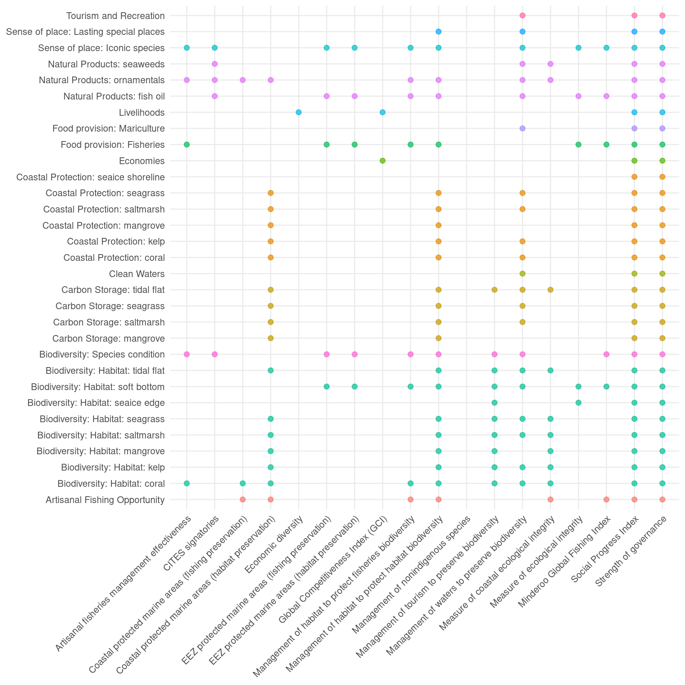

Resilience overview
Good governance and ecological integrity generally allow systems to absorb disturbance to maintain critical function, which will mitigate the impact of pressures on systems. We determine how resilience will help protect marine services from pressures to better predict what goal scores will look like in the near future.

Resilient systems are ecologically healthy and have robust social systems to deal with perturbations. The global OHI model includes three general indices of resilence: ecoystem condition, regulatory efforts to address specific pressures, and the general effectiveness of social systems.
For the global OHI assessment, we assess three general categories of resilience: ecological health, regulatory effort, and social effectiveness.
Ecological Health
Healthy ecosystems have the ability to absorb disturbance to maintain critical functions (Chambers et al. 2019). For the global OHI assessment, ecosystem health is measured as the relative condition of assessed species in a given location. For some goals, there is little evidence that this index of ecosystem integrity directly affects the value of the goal (or subgoal). In these instances, ecological integrity falls out of the resilience model.
Regulatory effort
Institutional measures (e.g., rules, regulations, and laws) can address the specific pressures acting on systems. For the global OHI assessment, regulatory effort is comprised of five categories that address the 5 pressure categories: fishing pressure, habitat destruction, climate change, water pollution, and species introductions. There is also an additional category for goal-specific regulations that apply to a goal or goals, but do not address a specific pressure category.
Social integrity
Well functioning societies have the capacity and resources to mitigate a wide array of challenges.This indicator is intended to describe the effectiveness of social institutions that exist to meet human needs such as government, economy, education, heathcare, and religion.
Each resilience category may be composed of several datasets. For each dataset, values will range from 0 to 1, reflecting the magnitude of resilience for each country (with 1 indicating high resilience).
Description of global resilience data (click to expand)
We then link the resilience variables to specific goals (Figure 2). Resilience estimates are intended to directly address, as much as possible, the specific pressures acting on a goal. Consequently, resilience scores should not exceed pressure scores, otherwise likely future status scores will be inflated.
Figure 2. The relationship between the resilience layers and goals. Points with the same color are the same goal, but some goals have different components that are affected differently.

The resilience estimate for each goal and country is then combined with the trend and pressure estimates to estimate goal scores.